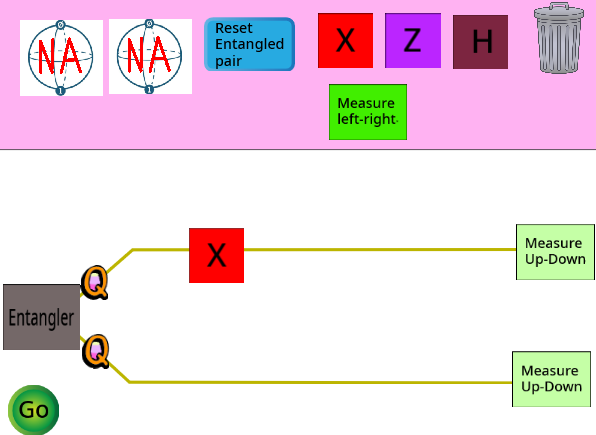
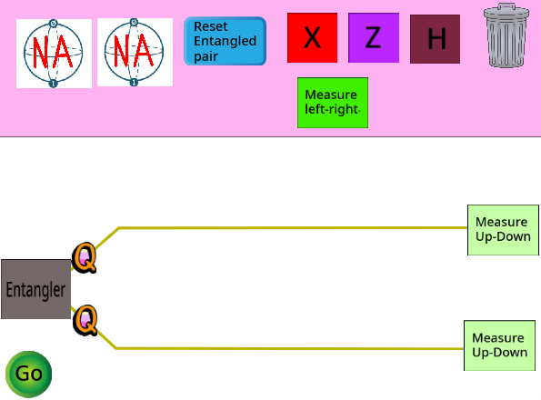

Entanglement Activity¶
In this activity we’ll be using another Scratch project.
Just like before, you can drag and drop the gates onto your wires to do things to the qubits. Now though, there are two qubits. As well you’ll notice something called an “entangler”. The entangler is what put your two qubits into one of the entangled states. Specifically it will put the two qubits into an entangled state called a Bell state.
This Bell state can be either the “\(|00\rangle\) and \(|11\rangle\)” state or the “\(|01\rangle\) and \(|10\rangle\)” state we discussed before.

Pressing the space bar returns your qubits to the entangler and starts them out in the Bell state again.
Complete the challenges!
Challenge 1¶
Let’s explore some of these extra entangled states that two qubits can be in. The first one we’ll discuss is called the Bell state. Let’s explore what happens when we measure a Bell state. The set-up is like this:

The box on the left, the entangler, puts the two qubits into the Bell state. The qubits then move along the wires until they are measured. We’ve chosen to measure both of them the up-down way.
How often does the qubit on the top come out as “up”?
0% of the time
50% of the time
100% of the time
The qubit that is measured first (in this case the one on the top) will come out as ‘up’ half the time. Remember that the qubits are still in a superposition, and we know what superpositions (when measured) have this 50-50 outcome.
Challenge 2¶
We saw that sometimes the top qubit comes out as up and sometimes it comes out as down. The outcome from the measurement looks random.
We can notice something interesting if we keep track of the measurement on the top and on the bottom. Run the simulation a few more times, this time watching both the measurement outcomes.
How are the results of measuring the top and bottom qubits related?
The measurements have nothing to do with each other.
The measurements always come out different
The measurements are always the same.
In the simulation we have built, we are actually using the “\(|00\rangle\) and \(|11\rangle\)” state. This means that measurements will be correlated, or both outcomes will be the same.
Challenge 3¶
We’ve seen that, in a Bell state, both measurements come out the same when you measure the up-down way.
Is the same true if we measure the left-right way?
Test it out in the simulator to find out!
If you measure both qubits of a Bell state the left-right way, do the outcomes always look the same, different, or random?
The measurements don’t have anything to do with each other
The measurements always come out opposite
The measurements always come out the same.
Entangled states retain their properties regardless of the way they are measured. This is important!